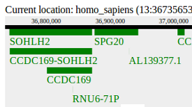
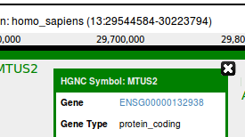
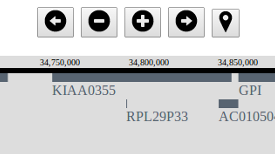
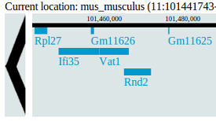
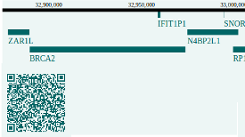

Themes
Overview
e!Peek themes surround and interact with the e!Peek core plug-in. The pre-defined themes shown here are ready to use in your web page. They may also serve as examples of how to develop your own theme.
To use one of the following themes use the following code:
<script src="http://www.ebi.ac.uk/~mp/ePeek/v1/lib/ePeek.min.js" charset="utf-8"></script><script src="http://www.ebi.ac.uk/~mp/ePeek/v1/lib/themes/<theme_name>.min.js" charset="utf-8"></script>
var gB = epeek().width(920); // other methods can be included here
var gBTheme = epeek_theme(); // other methods can be included here
gBTheme(gB, document.getElementById('DOM_element_id');
The themes may also have an external API to interact with. These APIs are explained in the theme page or in its documentation page.
Pre-defined themes
Minimal
Shows the minimum scheleton needed to build custom themes
Tooltip
Shows how to integrate tooltips on genes
Minimal (Buttons based)
Shows how to control a custom theme with buttons
Comparative
An example of how to compare the same region in two genomes
Compact
A more functional theme with links, navigation and search capabilities
Tree
An example of a more sophisticated theme with orthologues displayed on a tree